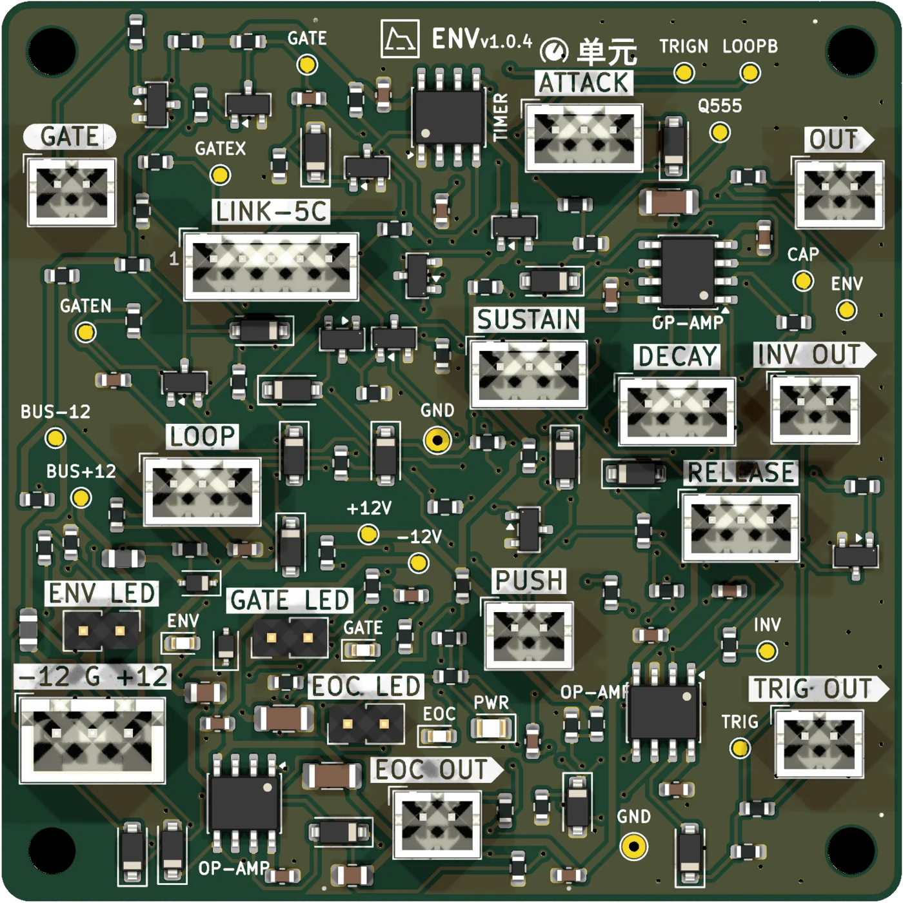
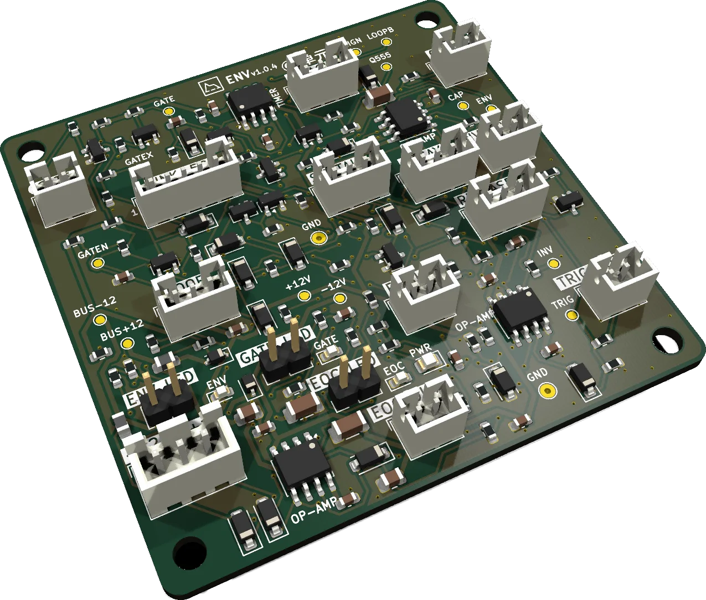
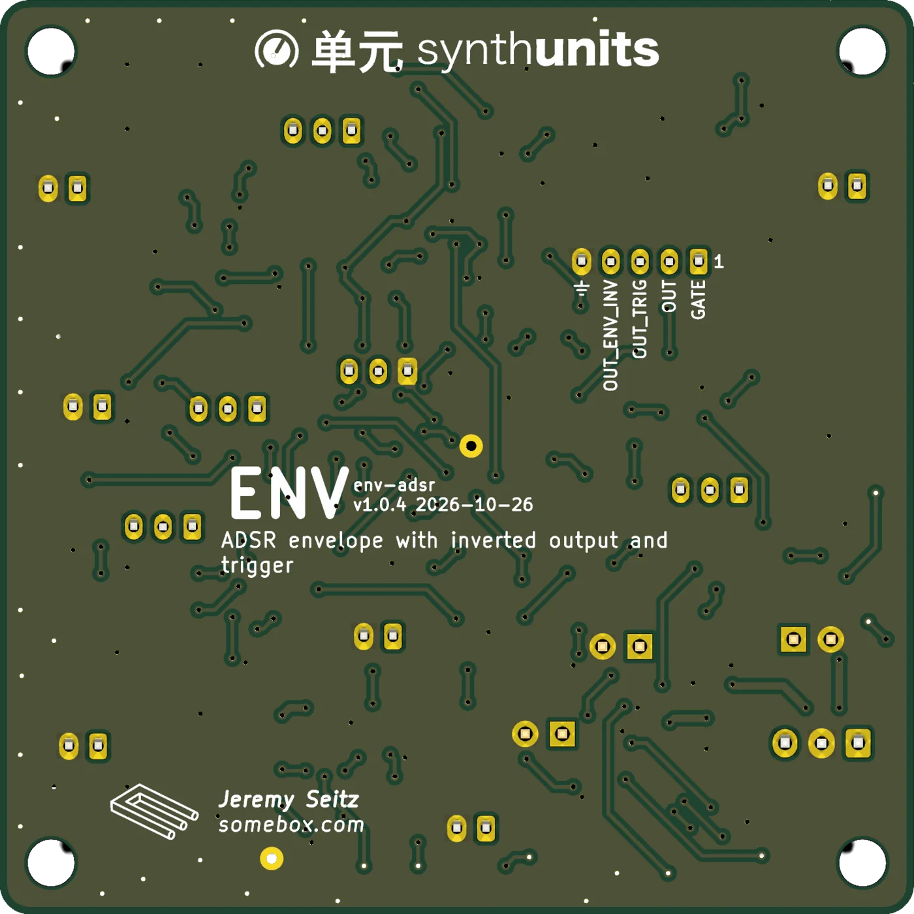
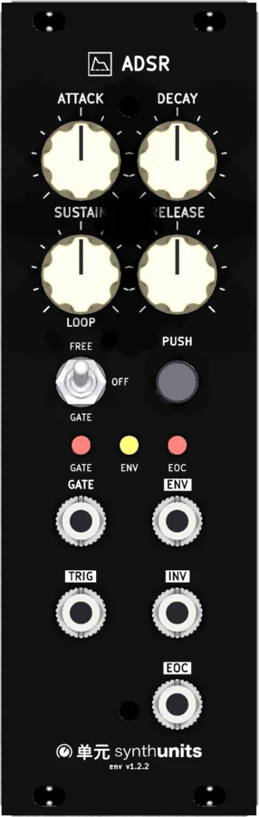

ADSR envelope
An ADSR envelope on a CMOS 555 timer, with loop, a manual gate button, trigger, end-of-cycle and inverted outputs.
An ADSR envelope, 0 to about 8 V, after René Schmitz's 555 ADSR, on a 62.5 × 62.5 mm board. A CMOS 555 timer is the attack flip-flop: a gate's rising edge sets it, ATTACK charges one capacitor until it reaches two thirds of the supply, and the 555 resets. DECAY then takes the capacitor down to the SUSTAIN level, and when the gate falls, RELEASE alone empties it to ground.
I changed the classic circuit in a few places. The decay stops exactly at the sustain voltage (an op-amp ideal diode). The release ends at ground through a transistor switch, not a diode drop that would leak through a VCA. A follower transistor carries the attack current the 555 can't. And the decay path opens at gate-off, so a short note releases at RELEASE alone.
Around it: a debounced PUSH button for a manual gate, TRIG OUT at each attack, an inverted output, EOC (end of cycle) when the envelope reaches its floor, and a LOOP switch that makes it retrigger itself: a second LFO shaped by ATTACK and DECAY.
- Status
- Being made
- Version
- v1.0.4 (2026-10-26)
- Board
- 62.5 × 62.5 mm, 2 layers
- First order
- 5 boards, 2 assembled by the fab
- Rough price
- about $35–40 (how)




Block diagram
Drawn by the site's generator from the board's own data: its blocks, its connectors and the links between them. The pots and switches are listed in the block they set.
What it does
- ENV OUT: 0 to about 8 V (two thirds of the supply after its protection diodes, typically 7.8 V), through 1 kΩ; it releases to about 18 mV (simulated). INV OUT: 0 to −8 V.
- Attack 0.7 ms to 2.8 s (simulated); decay and release time constants 0.5 ms to 2.2 s, a release down 40 dB in about 10 s.
- GATE: switches between about 1.2 and 2.6 V, so 3.3 V gates work; 47 kΩ; safe at ±12 V.
- TRIG OUT: about +10 V for 1.5 to 2 ms at the start of each attack (a gate, the button or a loop).
- EOC OUT: about +10 V for 15 ms when the envelope reaches its floor.
- LOOP: off, GATE (cycles while the gate or PUSH is held) or FREE (runs on its own); simulated from a few Hz up to about 600 Hz with ATTACK and DECAY fully down.
- PUSH: a manual gate, debounced: bounces shorter than about 3 ms are ignored.
- Power: about 10 to 13 mA on +12 V and 5 to 8 mA on −12 V, estimated.
- Board: 62.5 × 62.5 mm, 2 layers, four M3 holes.
Connections
| Connector | Wire to | Housing | Pins |
|---|---|---|---|
| GATE | a jack (Thonkiconn) | JST PH, 2 pins, top entry | 1 tip, 2 GND |
| ATTACK (A1M) | a pot (Alpha 9 mm A1M) | JST PH, 3 pins, top entry | 1 CCW, 2 wiper, 3 CW |
| ENV OUT | a jack (Thonkiconn) | JST PH, 2 pins, top entry | 1 tip, 2 GND |
| SUSTAIN (B10K) | a pot (Alpha 9 mm B10K) | JST PH, 3 pins, top entry | 1 CCW, 2 wiper, 3 CW |
| DECAY (A1M) | a pot (Alpha 9 mm A1M) | JST PH, 3 pins, top entry | 1 CCW, 2 wiper, 3 CW |
| RELEASE (A1M) | a pot (Alpha 9 mm A1M) | JST PH, 3 pins, top entry | 1 CCW, 2 wiper, 3 CW |
| PUSH (gate button) | a panel push button, wired by hand | JST PH, 2 pins, top entry | 1 signal, 2 GND (closing it: a gate) |
| TRIG OUT | a jack (Thonkiconn) | JST PH, 2 pins, top entry | 1 tip, 2 GND |
| INV OUT | a jack (Thonkiconn) | JST PH, 2 pins, top entry | 1 tip, 2 GND |
| LOOP SWITCH (DW2 on-off-on: up FREE, down GATE) | a toggle switch | JST PH, 3 pins, top entry | 1 A, 2 common, 3 B |
| EOC OUT | a jack (Thonkiconn) | JST PH, 2 pins, top entry | 1 tip, 2 GND |
| POWER (1 -12V, 2 GND, 3 +12V) | a the power board output (straight-through JST XH lead) | JST XH, 3 pins, top entry | 1 −12 V, 2 GND, 3 +12 V |
| LINK-5C | a lead to another module, or open | JST PH, 5 pins, top entry | 1 GATE_ENV, 2 OUT_ENV, 3 OUT_TRIG, 4 OUT_ENV_INV, 5 GND |
Every panel control has its own connector with a fixed pinout, so any lead of the right size fits any module. Pin 1 is the square pad.
LEDs
On the board: ENV (yellow), GATE (red), EOC (red). Pads for a panel LED: ENV LED, GATE LED, EOC LED.
Wiring and setup
- Power: a 3-pin JST XH lead (1 −12 V, 2 GND, 3 +12 V) from one of the power hub's outputs, with a ferrite and a series Schottky on each rail. Check each lead with a meter first.
- Panel: 5 jacks (GATE, ENV OUT, INV OUT, TRIG OUT, EOC OUT), 4 Alpha 9 mm pots (ATTACK, DECAY and RELEASE A1M, wired as variable resistors; SUSTAIN B10K), a push button for PUSH and an on-off-on toggle for LOOP (up FREE, down GATE). Each has its own top-entry JST PH connector: jacks and the button 2-pin, pots and the toggle 3-pin.
- The button is a 12 mm tactile switch on its own breakout board, under the panel.
- LED pads, each with its own resistor: ENV LED (follows the envelope), GATE LED (lit while the gate is high, dim by design) and EOC LED (flashes with EOC). Wire a bare 3 mm LED to each.
- LINK-5C: 1 gate in (47 kΩ, in parallel with the jack), 2 envelope, 3 trigger, 4 inverted envelope (the outputs before their 1 kΩ), 5 GND.
- Front panel: the series' shared 8 HP layout, with the board sideways behind it on a printed sled.
- No trimmers: nothing to calibrate.
Limits and open questions
- Not built. The 555 is simulated as an ideal flip-flop and the op-amps as clipped high-gain stages.
- A gate that rises slower than about 17 V/s (an LFO's triangle used as a gate, say) never starts the envelope.
- SUSTAIN's top and the peak don't line up: there is a dead band in the last part of the knob, and LOOP stalls with SUSTAIN above about 7.4 V. Turning SUSTAIN up during a held note does nothing until the next note.
- Times shift a few percent with temperature (a ceramic timing capacitor). For exact times, a film capacitor on a hand-soldered footprint.
- A gate shorter than the attack ends the attack early, and a retrigger during the release starts the attack from the current level.
- With a panel ENV LED and ENV OUT driving a VCA's CV input, a weak op-amp could run short of headroom at the peak. A resistor change before ordering narrowed that to settings where LOOP stalls anyway.
Development notes
- The 555 ADSR is René Schmitz's (no licence stated: studied, not copied); tkilla64's feitw (MIT) is a built example. The ideal-diode decay, the switched release, the clean release (an idea from Yusynth's ADSR) and the loop are mine; the loop takes ideas from Electric Druid's ENVGEN8, the Polivoks envelope and the MFOS Mini-Synth.
- A review found the 555 sourcing about 38 mA at the fastest attack, past its maximum, and the button firing three triggers from one bouncy press. A follower transistor and a debounce node fixed both, checked in simulation.
- The failure review before ordering lowered the gate's threshold, so 3.3 V gates from a microcontroller work, and raised the ENV LED pads' resistor.
- Next: build it, then check the gate threshold, LOOP (a stall, not a latch) and twenty presses of PUSH.
Schematic
The schematic as drawn, with each chip named by its function rather than its part number. The design isn't open source yet, so there are no files to download.


Would you use a ENV? A thumbs-up on its tracking issue is how I count interest, and you can subscribe there to follow its bring-up. Questions and ideas go to the discussions.